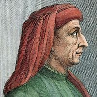

Principais artistas do Renascimento
O periodo renascentista, possuiu varios grandes artistas. Porém, irei destacar alguns desses artistas que mais se destacam.

Filippo Brunelleschi (1377-1446), nasceu em Florença, Itália, em uma família rica e
burguesa, dessa forma, teve uma ótima educação. Desde o princípio teve um interesse nas
artes e com isso, iniciou sua carreira como ourives, trabalhando nas estátuas da Catedral
de Pistoia. Por um tempo, Brunelleschi estava ligado à arte de esculpir, mas devido ao
resultado de um concurso de escultores, abandonou as esculturas e escolheu o campo da
arquitetura.
No processo da construção da Igreja Santa Maria del Fiore, assinado por
Arnolfo di Cambio, encontraram um problema pois era necessário um projeto de cúpula para
o teto da catedral, portanto, abriram um concurso e o vencedor foi Filippo Brunelleschi.
Dessa maneira, a partir de técnicas e do redescobrimento dos princípios greco-romanos da
perspectiva cônica, foi possível construir a famosa Cúpula da Catedral Santa Maria del
Fiore, com isso, Brunelleschi foi a “peça chave” para impulsionar o Renascimento,
atiçando diversos artistas com sua visão arquitetônica.
O diferencial do arquiteto é o uso de equações matemáticas na perspectiva, colocando o
fator artístico em segundo plano, originando o conceito de projeto arquitetônico, que
auxilia na produção de projetos mais simétricos e harmônicos.
Principais obras:
- Cúpula da Catedral Santa Maria del Fiore
- Hospital dos Inocentes
- Palácio Pitti
- Capela Pazzi
- Basílica de São Lourenço
Donato di Angelo di Pascuccio foi um arquiteto e pintor italiano renascentista do final
do século XV e início do XVI. Sua grande obra foi o projeto da Basílica de São Pedro,
no Vaticano. Grande parte de suas principais obras estão na cidade de Roma.
Arquiteto e pintor italiano, Donato Bramante nasceu em 1444, na região de Urbino, e
morreu em 1514, em Roma. Iniciou a sua aprendizagem de pintor e arquiteto em Urbino,
que na época fervilhava de atividade artística permitindo-lhe o contacto com o trabalho
de alguns dos maiores pintores e arquitetos renascentistas que aí exerciam a sua atividade.
Principais obras:
Michelangelo di Lodovico Buonarroti foi um pintor, escultor, arquiteto e poeta do
Renascimento Italiano. Nasceu em Caprese na Itália em 1475 e faleceu na cidade de Roma em 1564.
Em seu período escolar só tinha interesse em desenhar, enquanto sua família desprezava
a profissão de artista. Ele venceu os obstáculos e com apenas 13 anos ingressou como
aprendiz do estúdio de Domenico Ghirlandaio, porém mais tarde buscando uma arte mais
heroica ingressa na escola de escultura de Lourenço de Medicis. Convivendo com a elite
nobre e intelectual acabou se empolgando com o Renascentismo Italiano.
Principais obras:
- Basílica de São Lourenço, localizada em Florença.
- Biblioteca Laurenciana, também localizada em Florença.
- Participação na reforma da Basílica de São Pedro, em Roma.
Rafaello Sanzio, conhecido como Rafael Sanzio ou apenas Rafael, foi um dos principais
artistas e arquitetos do período renascentista. Rafael se destaca mais no campo das artes, mas também
fez grandes
trabalhos como arquiteto.
Ele nasceu em 1483, na cidade de Urbino, Itália, e
já desenvolveu interesse por artes desde a infância. Trabalhou como aprendiz no atelier
do artista Pietro Perugino, e adquiriu grande conhecimento sobre as técnicas de Afresco
e Pinturas de Murais. Mais tarde, ele foi pra cidade de Florença, onde foi Mestre de
Pintura e Arquitetura na Escola de Artes da cidade. Após isso ele se mudou para Roma,
onde permaneceu até a sua morte.
Ele faleceu em 1520, no dia em que completaria 37 anos.
Mesmo com sua morte precoce, ele foi um dos mais importantes artistas do Renascimento.
Principais obras:
Vincenzo Scamozzi nasceu em Vicenza, foi um discípulo de Andrea Palladio, arquiteto e o
último tratadista do Renascimento, considerado o “pai intelectual do estilo Neoclássico”
e recebeu educação de seu pai. Em 1572, ele se mudou para Veneza, para estudar o
tratado “De architectura” e também, focou nos estudos dos monumentos antigos. Ao
retornar para sua cidade natal, ele fez uma série de vilas e palácios em Vicenza.
Logo, ao fazer uma quantidade considerável de obras, Scamozzi escreveu um dos mais
importantes tratados, o livro “A ideia da arquitetura universal”.
A obra-prima de
Scamozzi é a Villa Pisani, mas algo interessante é a cidade Palmanova, demonstrando que o
Renascimento também teve um impacto nas cidades, através do urbanismo humano e racional, com muitas
formas geométricas, modelo radiocêntrico renascentista.
Principais obras:
- Villa Pisani detta la Rocca
- Palazzo Verlato Putin
- Palmanova
- Villa Nani Mocenigo
- Igreja de São Caetano